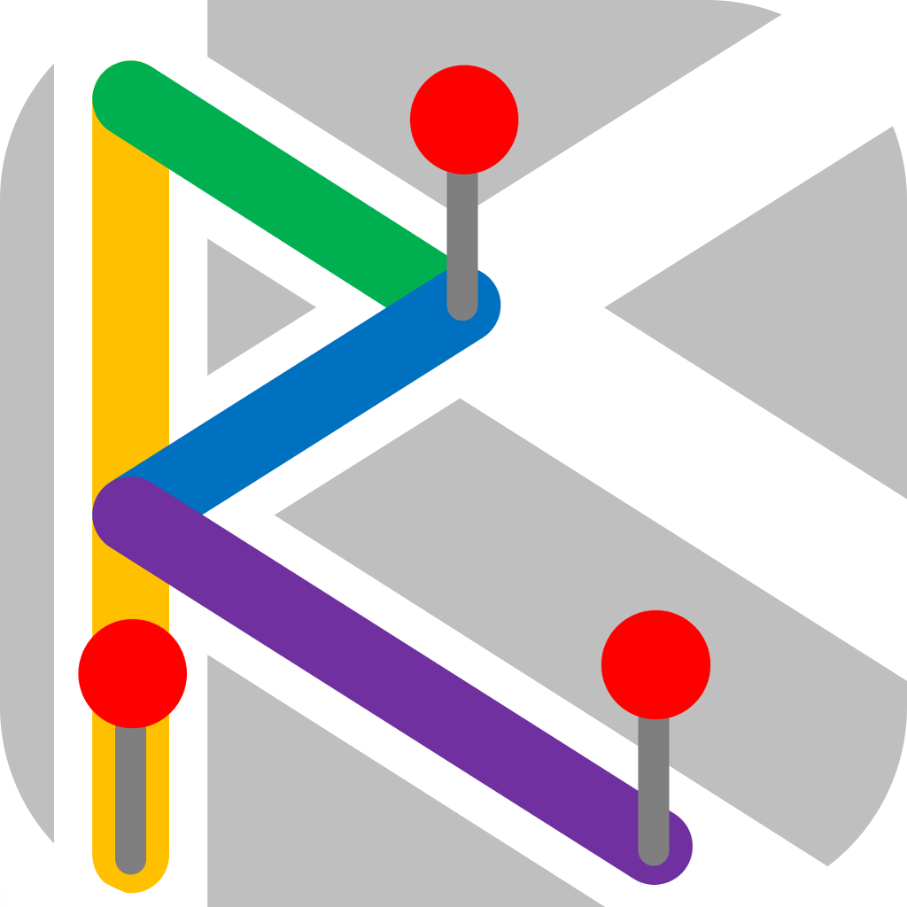

Abridged Portfolio of Projects

Emergency Services Router


This application routes preconfigured locations of emergency services, police, fire and medical, to incident locations. The routes are generated on the basis of time, location, station capability, obstructions in routes, and weather conditions. This is accomplished with the ArcGIS Network Analyst tool. I worked on this app in a team of 3 as an exercise in transportation engineering and optimization.
This is an ongoing project in my role at the BYU Hydroinformatics Lab and in partnership with a team at John Hopkins University. We are working to develop an application that will use near real time data and forecasted data to run a model to predict the spread of Enteric Diseases in many regions of Africa.
For my senior project as an undergraduate civil engineering student at BYU, I worked with INDRHI (Instituto Nacional de Recursos Hidraulicos), a water resources department of the Dominican Republic government. They have roughly a dozen large reservoirs that supply a considerable percentage of the water used in the country. In total, 17 students worked on 5 projects for INDRHI in groundwater modeling, flood mapping and damage analysis, and reservoir management projects. We visited our collegues in the Dominican Republic for 9 days in January 2019 including meetings, dam inspections
I was the leader of a team of 3 engineers that was assigned to improve their water management capabilities. We determined they needed to 1) have access to appropriately databased historic reservoir information, 2) simulate future water levels and situations and 3) generate reports based on their current and predicted water states for use in their governmental, inter-department meetings. Given the state of their country, they lack the physical and cyber infrastructure and enough trained personal to use more common practices of reservoir management such as HEC-ResSim. We provided them a series of tools, in the form of web-applications and spreadsheets, and enough documentation and training to accomplish the necessary analysis to manage their water.
This is an application I developed to improve the Tethys Software package first developed in the Hydroinformatics lab where I worked at the time. The application implements Google Analytics tracking capabilities with django and python packages.
The Tethys software package is used in international communities to lower the technical and monetary barriers that prevent people from effectively performing and sharing engineering analysis. This app lets users, especially app developers and administrators, view how, when, where their applications are used. This is intended to be used as a check that apps are being used by the intended audiences and for validation to project sponsors that end goals were met.
My researched solutions were accepted in a pull request on GitHub to be included in the Tethys 3.0 distribution. The app and it's tracking methodology were implemented on HydroShare and the BYU Tethys Portal.
I worked on an application that graphically visualizes the output of GLDAS (Global Land Data Assimilation System) data from NASA. The data is viewed as time animated maps, charts, and graphs as well as providing data download options.